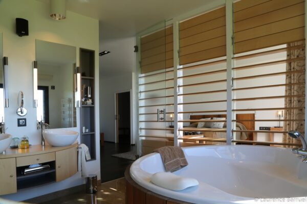

Larsiallas · 43290
4★
RC
RC
Hôtel Régis & Jacques
Dix chambres troglodytes, climatisation naturelle terre-et-soleil, écolabel européen, terrasse par chambre, piscine au sel réservée aux clients [12]. Sur le compound du restaurant — zéro mètre à parcourir le soir.